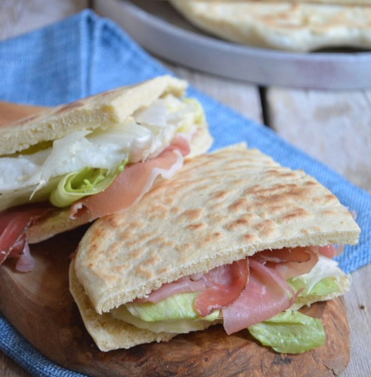
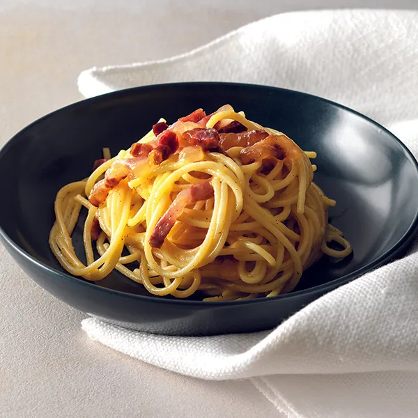

Ricette Salate
In questa sezione troverai tutte le ricette salate tipiche delle regioni italiane, dai piatti di pasta alle pizze, ideali per pranzi e cene gustose.

Umbria -Torta al Testo-
Ingredienti:
-Farina 00 500 g
-Acqua 250 g
-Olio extravergine d'oliva 20 g
-Sale fino 10 g
-Bicarbonato 5 g
Preparazione:
Per preparare la torta al testo versate in una ciotola la farina e il bicarbonato, poi aggiungete il sale e l’acqua.
Unite anche l’olio e mescolate con un cucchiaio per amalgamare gli ingredienti, poi trasferite il composto sul piano di lavoro e continuate a impastare.
Quando l’impasto sarà liscio e omogeneo trasferitelo nella ciotola, coprite con pellicola e lasciate riposare in frigorifero per 30 minuti. Trascorso questo tempo mettete a scaldare a fuoco basso l’apposita padella (il testo). Riprendete l’impasto e con un tarocco dividetelo in 2 porzioni da circa 350 g l’una. Stendete ciascuna porzione con il mattarello fino ad ottenere un disco del diametro di circa 25 cm.
Adagiate un disco di impasto sul testo rovente e cuocete a fuoco basso per pochi minuti. Quando cominceranno a formarsi delle macchioline marroni sulla parte inferiore, giratelo dall’altro lato e cuocete ancora per un paio di minuti. Rimuovete la torta al testo dalla padella e lasciate intiepidire mentre procedete con la cottura della seconda. La vostra torta al testo è pronta per essere tagliata a metà e farcita!

Lazio -La Carbonara-
Ingredienti:
-Spaghetti 320 g
-Guanciale 150 g
-Tuorli (di uova medie) 6
-Pecorino Romano DOP 50 g
-Pepe nero q.b.
Preparazione:
Per preparare gli spaghetti alla carbonara cominciate mettendo sul fuoco una pentola con l’acqua salata per cuocere la pasta. Nel frattempo eliminate la cotenna dal guanciale e tagliatelo prima a fette e poi a striscioline spesse circa 1cm. La cotenna avanzata potrà essere riutilizzata per insaporire altre preparazioni.
Versate i pezzetti di guanciale in una padella antiaderente e rosolate per circa 10 minuti a fiamma medio alta, fate attenzione a non bruciarlo altrimenti rilascerà un aroma troppo forte. Nel frattempo tuffate gli spaghetti nell’acqua bollente e cuoceteli al dente. Intanto versate i tuorli in una ciotola.
Aggiungete il Pecorino e insaporite con il pepe nero. Amalgamate il tutto con una frusta a mano, sino ad ottenere una crema liscia.
Intanto il guanciale sarà giunto a cottura; spegnete il fuoco e utilizzando un mestolo prelevatelo dalla padella, lasciando il fondo di cottura all'interno della padella stessa. Trasferite il guanciale in una ciotolina e tenetelo da parte. Versate una mestolata d’acqua della pasta in padella, insieme al grasso del guanciale.
Scolate la pasta al dente direttamente nel tegame con il fondo di cottura. Saltatela brevemente per insaporirla. Togliete dal fuoco e versate il composto di uova e Pecorino nel tegame. Mescolate velocemente per amalgamare.
Per renderla ben cremosa, al bisogno, potete aggiungere poca acqua di cottura della pasta. Aggiungete il guanciale, mescolate un'ultima volta e servite subito gli spaghetti alla carbonara aggiungendo ancora del pecorino in superficie e un pizzico di pepe nero